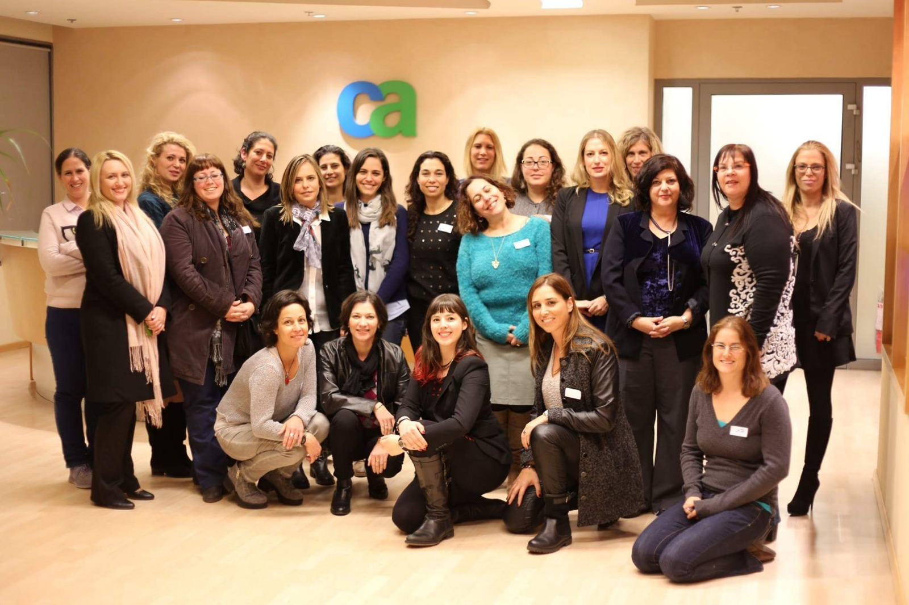
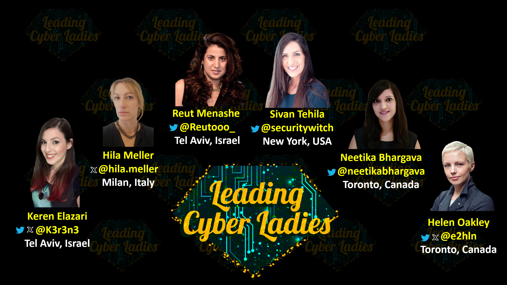

What is the “Leading Cyber Ladies” movement?
Leading Cyber Ladies is a global professional network of women in cybersecurity.
Our Values
"Leading Cyber Ladies" is a movement to get women of all kinds in cybersecurity together at meetups, to give talks and speak up about their work, get comfortable with public speaking and network with other such amazing ladies in a comfortable, professional, and friendly environment. We believe in creating a safe and friendly environment for women in the cybersecurity community, with the goal of achieving greater diversity, representation, and equality in this vibrant field. That’s why 90% of our meetups so far have featured mostly women (or women-identifying) speakers and attendees. For future events, this may be up to each event organizer to decide per event, in the spirit of their own local communities. We’ve also made sure our events have no “product pitch” talks or exclusive company sponsor (but rather multiple organizations). We keep our memberships free and accessible for everyone. We do not collect any charities and our organization runs completely on volunter basis by our global committee and local chapter organizers. Our movement is driven by passion of people who want to make a difference in cybersecurity field. These are our values from the first event and we hope they will be embraced by the global community.
History
The first ever “Leading Cyber Ladies” meetup took place in Israel, January 2015. The meetup was originally the idea of Hila Meller, who was an executive with CA Europe at the time - she is now the head of security for BT in Europe. Hila suggested the idea of the meetup to Keren Elazari and together they planned and hosted the first-ever meetup for women in cyber security in Israel – the speakers were some amazing ladies like EL AL Israeli Airlines ’s CISO, and the leading digital crimes prosecutor in Israel, among others. Below is the cool picture taken at the first ever meeting: We called ourselves the “Leading Cyber Ladies” since we want inspire others and lead more diversity and equality in our industry. We felt it represented our commitment to lead for this change to happen.
The very first Leading Cyber Ladies meetup in Tel Aviv, Israel
January 2015
Where we are today
Today, "Leading Cyber Ladies" movement has established chapters in Israel, USA, Canada and the UK. We continue running our in-person meetups and/or virtual events. We partner with many organizations, non-profit and for-profit, expanding the netwroking opportunities for our members.
If you would like to start a chapter in your area and/or become a partner - get in touch with us!
Leading Cyber Ladies GLobal Committee
On image below left to right: Keren Elazari (@k3r3n3), Hila Meller, Reut Menashe (@Reutooo_), Sivan Tehila (@securitywitch), Neetika Bhargava (@NeetikaBhargava) and Helen Oakley (@e2hln)
